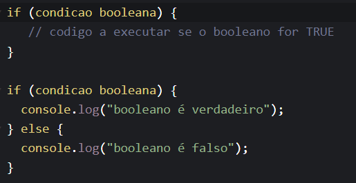
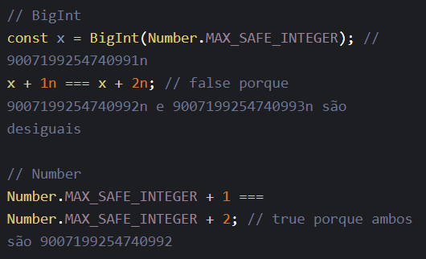

São usados para construir outras estruturas de dados. Sempre que possível, são feitas comparações com outras línguas.
Conhecer os tipos de dados em JavaScript ajuda o desenvolvedor entender melhor, por exemplo, o processo de criação de variáveis.
O JS tem 7 tipos de dados diferentes, são eles:
Boolean representa uma entidade lógica e pode ter dois valores: true e false. or exemplo, em JavaScript, condicionais booleanas são usadas para decidir quais trechos do código serão executados ou repetidas. Exemplo:
O tipo Null possui apenas um valor: null. Null representa um valor nulo ou "vazio
Uma variável que não recebeu um valor tem o valor undefined.
É capaz de armazenar números de ponto flutuante positivos entre 2^-1074 e 2^1024, bem como números de ponto flutuante negativos entre -(2^-1074) e -(2^1024), mas só pode armazenar com segurança inteiros no intervalo -(2^53 − 1) para 2^53 − 1.
Pode representar inteiros com precisão arbitrária. Com BigInts, você pode armazenar e operar com segurança em grandes números inteiros, mesmo além do limite de números inteiros seguros. Exemplos:
É usado para representar dados textuais. É um conjunto de "elementos" de valores inteiros sem sinal de 16 bits. Cada elemento na String ocupa uma posição na String. O primeiro elemento está no índice 0, o próximo no índice 1 e assim por diante. O comprimento de uma String é o número de elementos nela.
É um valor primitivo único e imutável e pode ser usado como a chave de uma propriedade Object.